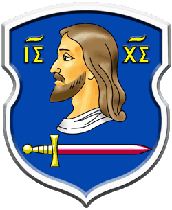
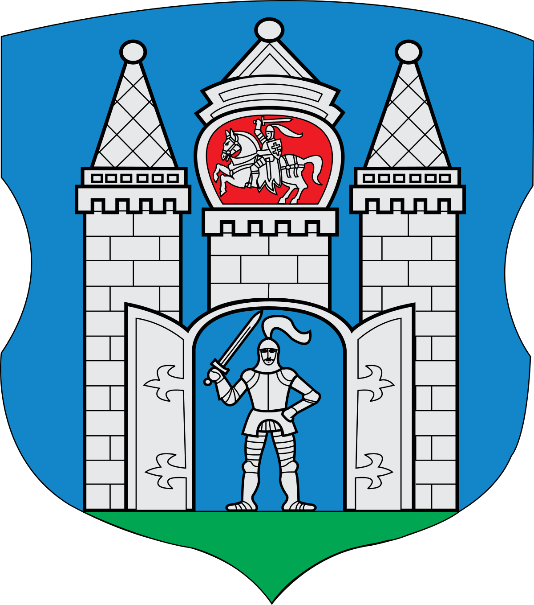
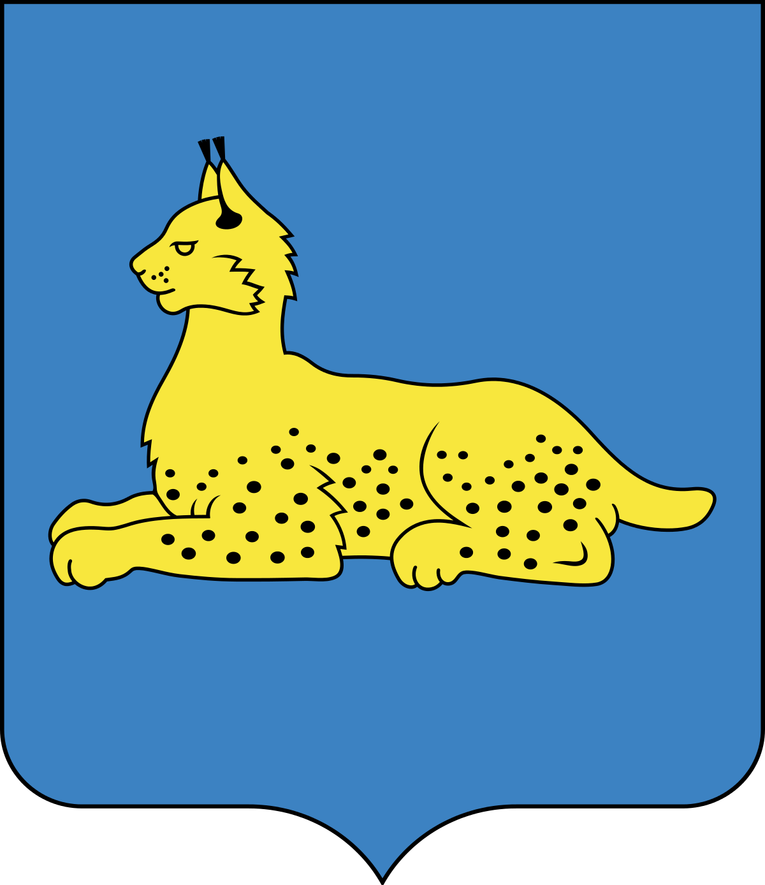
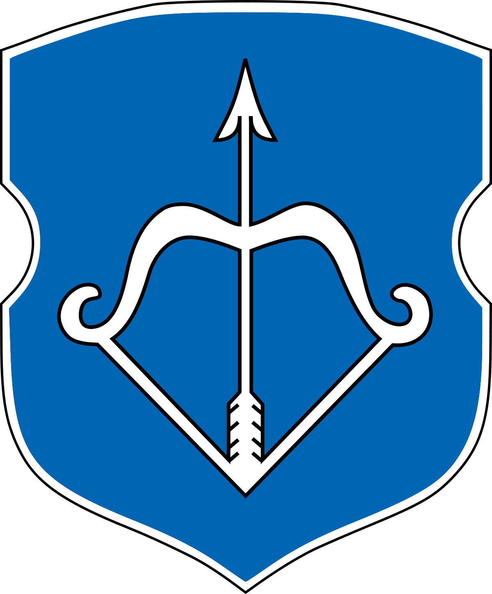

The story about the appearance of Minsk!

History stores two main legends of the origin of Minsk. Each of them is distinguished by a beautiful narrative and a contender for the role of the main one. In fact, no one can determine what exactly caused these names to appear.
The first legend is dedicated to the healer by the name of Menesk. By the way, this is the name that first appears in The Tale of Bygone Years when the sons of Yaroslav the Wise arrived at the city walls to capture him. But much earlier in the settlement erected on the Svisloch River, the aforementioned healer erected a large stone mill. Locals considered him a real hero. Basically, the young man was engaged in grinding grain. He rarely came out to people. Because of this, there were a lot of rumors about him. Some believed that the mill on Svisloch was grinding a stone instead of a zhita, while others supposedly heard screaming and music at night. Some of the settlers were convinced that at night, Menesk walked around the village and gathered the most daring and courageous in his retinue. Of these, a people subsequently came about who began to bear the name of their leader.
The second, more popular, legend is dedicated to artisans and merchants who began to gather at the fair in a convenient location on the Svisloch River. Initially, settlements were not made, instead of them, a convenient way of trading was the exchange of goods (barter). It is believed that this word became the basis in the origin of the name of the
The story about the appearance of Vitebsk!

Each city has its own story, the story of the name of the settlement. Vitebsk got its name thanks to the Vitbe River (the left tributary of the Western Dvina River).
The story of Vitba herself begins in the distant past. And there is a very beautiful legend, a legend about a girl, although there are still a couple of other versions about the origin of the Vitba river itself.
So, in order. Version One:
In the distant past, a tribe descended from the Black Mountains, fled, hurried somewhere. In this tribe lived one lovely creature named Radunitsa. Having a charming beauty and mind, she wanted to know everything, everything was interesting. The forest in those days was so magnificent that one could say about it: “He is alive!”. Admiring him, the girl stopped, considering everything that was happening in this forest.After some period of time, she came to her senses, but it was already too late - there was nobody around. The sun had already set, the moon was shining. The girl was frightened, cried, and in desperation, she began to wind between trees, bushes, hills and fields in the hope of finding her tribe. She cried so much that her tears did not have time to dry out on the ground. And over time, a stream began to run after it, and then the river itself. Since then, the river has been spinning in girlish footsteps, like lace, curls in a twist, bends and turns
The story about the appearance of Mogilev!

It is believed that Mogilev got its current name as a result of a similar designation of the place where ataman Mashek was buried in his time. The noble robber was distinguished by courage and uncommon strength. There was a rumor throughout the district that the heroic power that nature had endowed him helped him cope with all his enemies. He himself was like a lion: strong and domineering. People said that the chieftain could pull up trees with the root. However, the life course allotted to him was reduced not by the beast, not by another robber, but by a woman. He became a victim of deceit. The place where he was buried began to be called the tomb of a lion. Contemporaries got the derived name "Mogilev".
The story about the appearance of Gomel!

In the very place where the city is now located, on the Sozh River there used to be too much washed sand. Rafts and barges passing along this river could run aground, and to prevent this from happening, a man was constantly on the shore opposite this place, and shouted loudly, warning: “Go! Stranded! Go! Stranded!
There is also an opinion that the town was given the name by the Gomeyuk brook, which flowed into the Sozh River at the foot of the mound, it was believed that it was there that the first settlement was once formed. And the word Gomeyuk comes from the Finnish hommo joki "fast river".
The city itself has considerable urban legends and signs. For example, the fact that you can be charged with fortune throughout the city, and it will be as easy as charging a phone. At the railway station, a genre sculpture “Road mood” was installed - a traveler sitting on a suitcase. And according to popular belief, if you rub his nose, then you are guaranteed a good mood and (or) success during the trip. In Gomel, there is also a sign for students: it is possible to recharge with success with the help of the subject "Students". They don’t forget to rub themselves on the “Pencil”, too, that, near the circus, they say, a good omen ...
Also, most newlyweds try to stay at the “Boatman” on the day of marriage, many climb into the boat itself, believing that
The story about the appearance of Grodno!

Grodno has been known since the beginning of the XII century, when the city prince Vsevolod was first mentioned in Russian chronicles. It was then that the city first became known as the center of the City Principality.
Grodno was first mentioned in the annals in 1005, however, this message requires thorough verification, since the link is not to the source. The official date of foundation of the city is 1128.
Throughout its history, the city has been the center of various administrative and territorial units of the Grand Duchy of Lithuania, the Commonwealth, the Russian Empire, the Soviet Union and independent Belarus. Since 1991, the city has been the regional center of the Republic of Belarus; located near the state border with Poland and Lithuania.
Grodno is one of the oldest cities in the territory of modern Belarus. Archaeological excavations show that at the end of the first and the beginning of the second millennium, the Grodno region was inhabited mainly by the Baltic Yotvags and Lithuania and the Slavic Dregovich expanding their presence; the first Slavic settlements on the territory of the future Grodno appeared in the X century on a high bank at the mouth of the Gorodnichanka and Neman rivers. In the XII century, on the site of these settlements, a city appeared, located at the intersection of trade routes, and initially was a small
The story about the appearance of Brest!

BREST is the third oldest city in Belarus after Polotsk-862 and Turov-980.
The history of Brest, or Berestya (the first name of the city) begins in 1019, the first mention found in the "Tale of Bygone Years". It was a large, well-fortified settlement. Birch bark residents lived here, and the name of the city ... most likely comes from the word "birch bark" (the outer layer of the birch bark) or from the word "birch bark" (type of elm).
One of the legends of the name of the city - the rich merchant with his comrades went with goods to Lithuania. The caravan made its way off-road through dense forests and thorny bushes until a swamp bog blocked the road ... there was no way to move further, the wheels of the carts were tightly bogged down, the horses could not take a single step. Merchants were not accustomed to retreating from their goals - they chopped birch trees, covered the swamp with birch flooring, and the shopping cart crossed the swamp along the unsteady but strong birch path. Near a small river, the caravan stopped to rest. A river not far flowed into a wider river and formed an island with it, densely covered with trees. They thanked the merchants of their pagan god Veles for a safe passage - they built a temple in his honor on the island and moved on. After successful fishing in Lithuanian lands, a convoy with large profits returned. They made a halt at Velesov’s temple, cut down several log huts here and decided to stay forever. They did not forget the difficult path